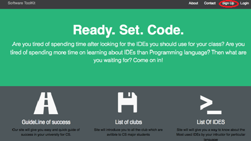
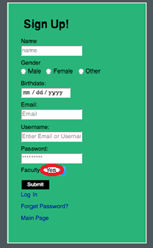
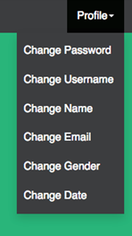
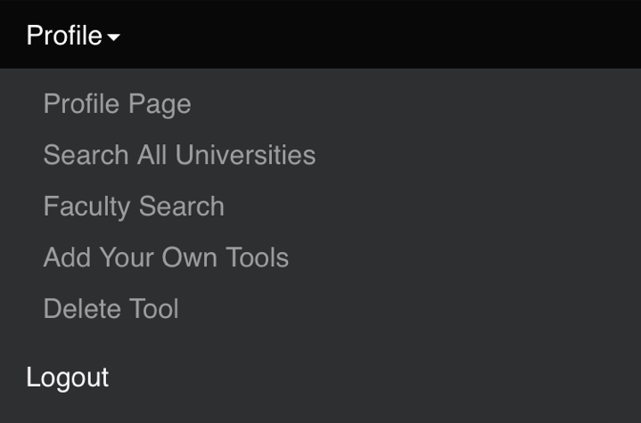
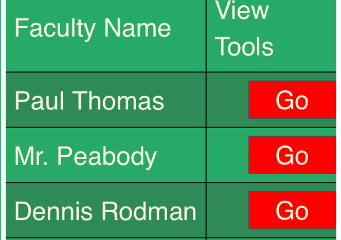
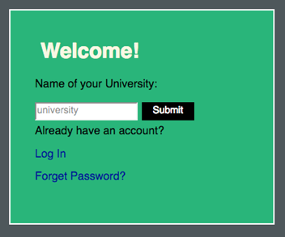
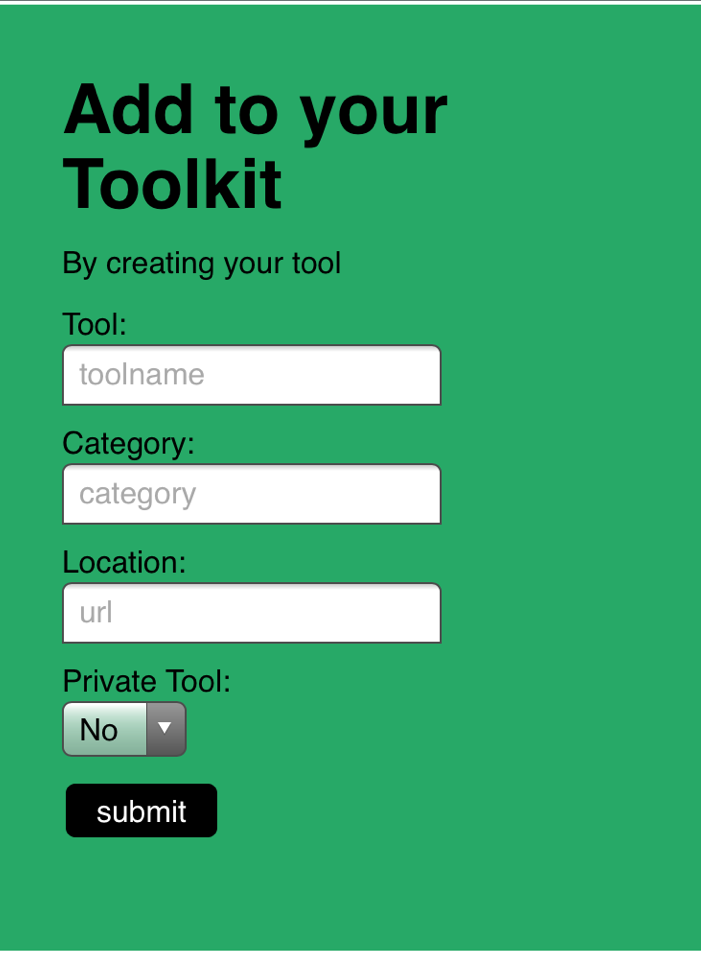

As a faculty account is created, a faculty member will belong to a specific university. Faculty members have the ability to create visible or invisible tools to the related university toolbox for student users to have access. This is protect tools needing to be seen or are yet to be released to the public. Guidelines of success, list of clubs, and IDE's are supplied by the faculty user as PDF files.
On sign-up:
From the main Software ToolKit page, click the Sign Up option from the top right on the menu bar. Select "Yes" in the faculty member option from the drop down box to create the faculty experience. Fill out the rest of the fields as well.
Note that later after the account is created and signed in, these fields filled out in the Sign Up form can be changed from the profile page on the profile menu drop down.
After sign-up:
You can now select the Login option from the top right of the menu bar (next to Sign Up). Once signed in as a User, you can view the tools available by Guideline of Success, List of Clubs, and List of IDE's. For example, we will try IDE's. Click the IDE icon (not the icon below).
From the profile page, the profile drop down on the menu bar will open many new options.
The Faculty Search option will take you to other faculty members with their own toolkit created.
From the profile menu, Search All Universities will show other University tool kits created by faculty members associated with the respected University. The University must be entered in the search field by the exact spelling a University was created.
The most functional part of this account is the Add Your Own Tools option. Here is where the Faculty User creates tools for the University for Student Users to have access to. The tool created will have a name, a category in which the tool fits, a location for a URL so the Student can have an access button within their toolbox that leads to this link, and a private or public drop down field. If a student is designated to view this tool, leave it public by selecting "No"!
Help create an easy experience for student education!